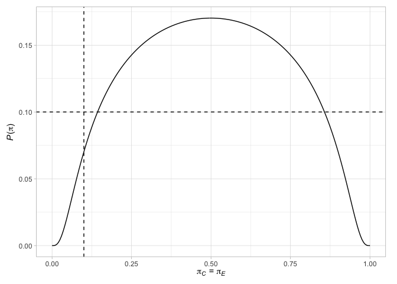
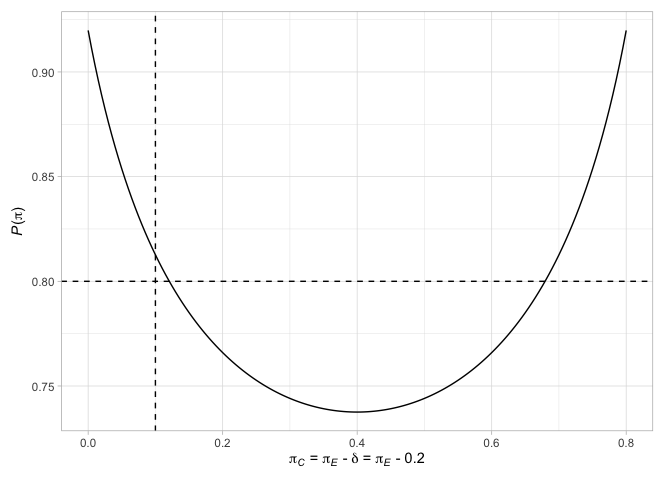

Design of randomized comparative phase II oncology trials with a Bernoulli distributed primary outcome
ph2rand provides functions to assist with the design of randomized comparative phase II oncology trials that assume their primary outcome variable is Bernoulli distributed. Specifically, support is provided to
(a) perform a sample size calculation when using one of several published designs (Jung, 2008; Jung and Sargent, 2014; Kepner, 2010; Litwin et al, 2017, Shan et al, 2013), (b) evaluate the operating characteristics of a given design (both analytically and via simulation), and (c) produce informative plots.
You can install the the latest development version of ph2rand, available from GitHub, with
devtools::install_github("mjg211/ph2rand")
An introductory example of how to make use of the package’s core functionality can be found below. For further help, please see the package vignettes or email michael.grayling@newcastle.ac.uk.
We demonstrate functionality for two-stage designs, with the approach for single-stage designs being similar. First, find a two-stage design from Jung (2008) for the default parameters
des_jung <- des_two_stage()
Then examine its required sample size in each arm, in each stage
des_jung$nC #> [1] 17 17 des_jung$nE #> [1] 17 17
Next, look at its key operating characteristics
des_jung$opchar #> # A tibble: 2 x 13 #> piC piE `P(pi)` `ESS(pi)` `SDSS(pi)` `MSS(pi)` `E1(pi)` `E2(pi)` `F1(pi)` #> <dbl> <dbl> <dbl> <dbl> <dbl> <dbl> <dbl> <dbl> <dbl> #> 1 0.1 0.1 0.0702 47.0 16.5 34 0 0.0702 0.617 #> 2 0.1 0.3 0.813 64.7 10.1 68 0 0.813 0.0972 #> # … with 4 more variables: `F2(pi)` <dbl>, `S1(pi)` <dbl>, `S2(pi)` <dbl>, `max #> # N` <int>
Compare this to the equivalent design from Litwin et al (2017)
des_litwin_et_al <- des_two_stage(type = "sat", nCmax = 20L) des_litwin_et_al$nC #> [1] 10 10 des_litwin_et_al$nE #> [1] 10 10 des_litwin_et_al$opchar #> # A tibble: 2 x 13 #> piC piE `P(pi)` `ESS(pi)` `SDSS(pi)` `MSS(pi)` `E1(pi)` `E2(pi)` `F1(pi)` #> <dbl> <dbl> <dbl> <dbl> <dbl> <dbl> <dbl> <dbl> <dbl> #> 1 0.1 0.1 0.100 25.2 8.79 20 0 0.100 0.739 #> 2 0.1 0.3 0.804 36.9 7.20 40 0 0.804 0.153 #> # … with 4 more variables: `F2(pi)` <dbl>, `S1(pi)` <dbl>, `S2(pi)` <dbl>, `max #> # N` <int>
Now to that from Shan (2013)
des_shan_et_al <- des_two_stage(type = "barnard", nCmax = 40L) des_shan_et_al$nC #> [1] 17 17 des_shan_et_al$nE #> [1] 17 17 des_shan_et_al$opchar #> # A tibble: 2 x 13 #> piC piE `P(pi)` `ESS(pi)` `SDSS(pi)` `MSS(pi)` `E1(pi)` `E2(pi)` `F1(pi)` #> <dbl> <dbl> <dbl> <dbl> <dbl> <dbl> <dbl> <dbl> <dbl> #> 1 0.1 0.1 0.0968 47.0 16.5 34 0 0.0968 0.617 #> 2 0.1 0.3 0.800 64.7 10.1 68 0 0.800 0.0977 #> # … with 4 more variables: `F2(pi)` <dbl>, `S1(pi)` <dbl>, `S2(pi)` <dbl>, `max #> # N` <int>
And finally that from Jung and Sargent (2014)
des_jung_sargent <- des_two_stage(type = "fisher") des_jung_sargent$nC #> [1] 22 22 des_jung_sargent$nE #> [1] 22 22 des_jung_sargent$opchar #> # A tibble: 2 x 13 #> piC piE `P(pi)` `ESS(pi)` `SDSS(pi)` `MSS(pi)` `E1(pi)` `E2(pi)` `F1(pi)` #> <dbl> <dbl> <dbl> <dbl> <dbl> <dbl> <dbl> <dbl> <dbl> #> 1 0.1 0.1 0.0530 61.5 21.5 44 0 0.0530 0.602 #> 2 0.1 0.3 0.808 85.2 10.7 88 0 0.808 0.0627 #> # … with 4 more variables: `F2(pi)` <dbl>, `S1(pi)` <dbl>, `S2(pi)` <dbl>, `max #> # N` <int>
We can then readily find the terminal points of any of these designs, along with their probability mass functions and operating characteristics for any true response rates. For example, consider two scenarios given by
Then find the terminal points, probability mass functions, and operating characteristics (both analytically and via simulation) of the Jung
(2008) design with
terminal_jung <- terminal(des_jung) terminal_jung$terminal #> # A tibble: 1,344 x 7 #> xC xE mC mE statistic decision k #> <int> <int> <int> <int> <int> <fct> <fct> #> 1 0 0 17 17 0 Do not reject 1 #> 2 0 1 17 17 1 Continue to stage 2 1 #> 3 0 2 17 17 2 Continue to stage 2 1 #> 4 0 3 17 17 3 Continue to stage 2 1 #> 5 0 4 17 17 4 Continue to stage 2 1 #> 6 0 5 17 17 5 Continue to stage 2 1 #> 7 0 6 17 17 6 Continue to stage 2 1 #> 8 0 7 17 17 7 Continue to stage 2 1 #> 9 0 8 17 17 8 Continue to stage 2 1 #> 10 0 9 17 17 9 Continue to stage 2 1 #> # … with 1,334 more rows pmf_jung <- pmf(des_jung, pi) pmf_jung$pmf #> # A tibble: 2,382 x 10 #> piC piE xC xE mC mE statistic decision k `f(x,m|pi)` #> <dbl> <dbl> <int> <int> <int> <int> <int> <fct> <fct> <dbl> #> 1 0.1 0.1 0 0 17 17 0 Do not reject 1 0.0278 #> 2 0.1 0.1 1 0 17 17 -1 Do not reject 1 0.0525 #> 3 0.1 0.1 1 1 17 17 0 Do not reject 1 0.0992 #> 4 0.1 0.1 2 0 17 17 -2 Do not reject 1 0.0467 #> 5 0.1 0.1 2 1 17 17 -1 Do not reject 1 0.0882 #> 6 0.1 0.1 2 2 17 17 0 Do not reject 1 0.0784 #> 7 0.1 0.1 3 0 17 17 -3 Do not reject 1 0.0259 #> 8 0.1 0.1 3 1 17 17 -2 Do not reject 1 0.0490 #> 9 0.1 0.1 3 2 17 17 -1 Do not reject 1 0.0436 #> 10 0.1 0.1 3 3 17 17 0 Do not reject 1 0.0242 #> # … with 2,372 more rows opchar_jung <- opchar(des_jung, pi) opchar_jung$opchar #> # A tibble: 2 x 13 #> piC piE `P(pi)` `ESS(pi)` `SDSS(pi)` `MSS(pi)` `E1(pi)` `E2(pi)` `F1(pi)` #> <dbl> <dbl> <dbl> <dbl> <dbl> <dbl> <dbl> <dbl> <dbl> #> 1 0.1 0.1 0.0702 47.0 16.5 34 0 0.0702 0.617 #> 2 0.1 0.3 0.813 64.7 10.1 68 0 0.813 0.0972 #> # … with 4 more variables: `F2(pi)` <dbl>, `S1(pi)` <dbl>, `S2(pi)` <dbl>, `max #> # N` <int> sim_jung <- sim(des_jung, pi) sim_jung$sim #> # A tibble: 2 x 13 #> piC piE `P(pi)` `ESS(pi)` `SDSS(pi)` `MSS(pi)` `E1(pi)` `E2(pi)` `F1(pi)` #> <dbl> <dbl> <dbl> <dbl> <dbl> <dbl> <dbl> <dbl> <dbl> #> 1 0.1 0.1 0.0718 47.0 16.5 34 0 0.0718 0.618 #> 2 0.1 0.3 0.804 64.6 10.2 68 0 0.804 0.101 #> # … with 4 more variables: `F2(pi)` <dbl>, `S1(pi)` <dbl>, `S2(pi)` <dbl>, `max #> # N` <int>
Finally, we can plot various factors relating to the designs. For example, plot the terminal points of the Jung (2008) design (with their associated decisions), along with the probability of rejecting the null hypothesis when the response probabilities are equal in the two arms or when the difference in the response probabilities is the chosen treatment effect
plot(des_jung)

See the package vignettes for further details.
Jung SH (2008) Randomized phase II trials with a prospective control. Stat Med 27(4):568–83. DOI: 10.1002/sim.2961. PMID: 17573688.
Jung SH, Sargent DJ (2014) Randomized phase II clinical trials. J Biopharm Stat 24(4):802–16. DOI: 10.1080/10543406.2014.901343. PMID: 24697589.
Kepner JL (2010) On group sequential designs comparing two binomial proportions. J Biopharm Stat 20(1):145–59. DOI: 10.1080/10543400903280621. PMID: 20077254.
Litwin S, Basickes S, Ross EA (2017) Two-sample binary phase 2 trials with low type I error and low sample size. Stat Med 36(9):1383–94. DOI: 10.1002/sim.7226. PMID: 28118686.
Shan G, Ma C, Hutson AD, Wilding GE (2013) Randomized two-stage phase II clinical trial designs based on Barnard’s exact test. J Biopharm Stat 23(5):1081–90. DOI: 10.1080/10543406.2013.813525. PMID: 23957517.